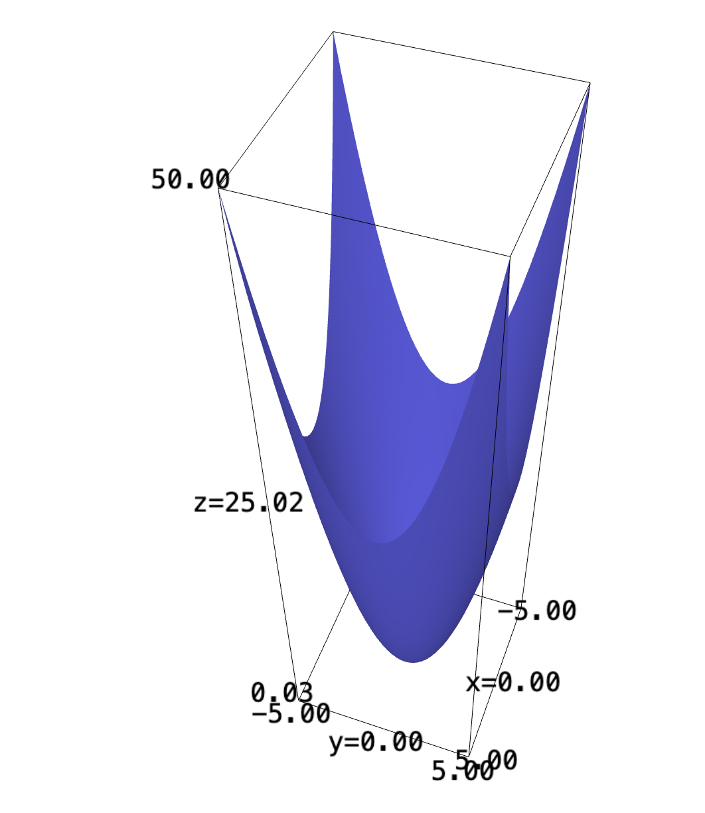
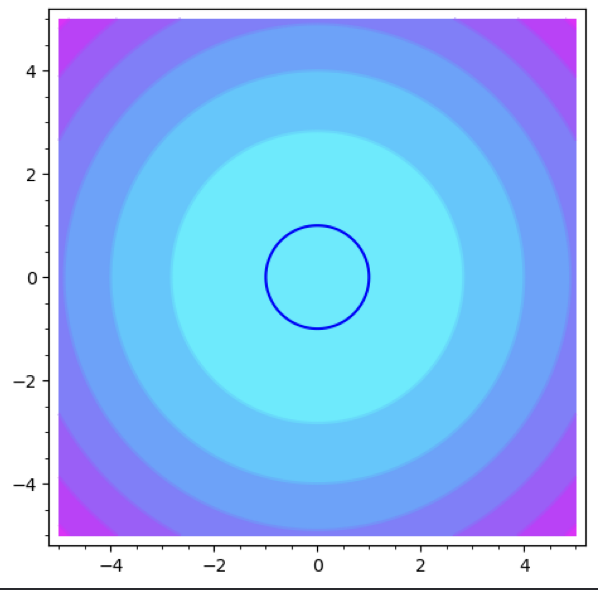

Backlinks
1 Line integral problem 1
Consider the following function:
\begin{equation} f(x,y) = ye^x \end{equation}
We first graph the expression.
f(x,y) = y*e^x plot3d(f, (x,-5,5), (y,-5,5))

Find an area under the straight line from \((1,2)\) to \((4,7)\).
The line has slope \(\frac{5}{3}\). We will begin by solving for its \(y\) intercept.
\begin{align} &2 = \frac{5}{3} + b\\ &b = \frac{1}{3} \end{align}Therefore, the expression from which we are slicing is:
\begin{equation} y = \frac{5}{3} x + \frac{1}{3} \end{equation}From here, we will now actually perform the parameterization.
\begin{equation} \begin{align} &x = t\\ &y = \frac{5}{3} t + \frac{1}{3} \end{align} \end{equation}f(x,y) = y*e^x contour_plot(f, (x,-5,5), (y,-5,5), cmap="cool")+plot((5/3)*x+(1/3), (-3,3))

Our bounds are \((1,2)\) to \((4,7)\), meaning the bounds are from \([1,4]\) in units of \(t\).
Additionally, we will figure the rate of change of the action function w.r.t. both of these variables:
\begin{align} \frac{dx}{dt} &= 1 \\ \frac{dy}{dt} &= \frac{5}{3} \end{align}Therefore, the actual function \(\frac{df}{dt}\) grows at a rate of:
\begin{align} \frac{df}{dt} &= \sqrt{1 + \left(\frac{5}{3}\right)^2}\\ &= \sqrt{1 + \frac{25}{9}}\\ &= \sqrt{\frac{34}{9}} \end{align}Now we are ready to parameterize this function.
\begin{align} &f(x,y) = ye^x \\ \Rightarrow &f\left(t, \frac{5}{3}t+\frac{1}{3}\right) = \left(\frac{5}{3}t+\frac{1}{3}\right) e^t \end{align}The actual integral, scaled correctly to the units originally in the function, therefore is:
\begin{equation} \int^4_1 = \left(\frac{5}{3}t+\left(\frac{1}{3}\right)\right)e^t\sqrt(\frac{34}{9}) \end{equation}from sage.symbolic.integration.integral import definite_integral float(definite_integral(((5/3)*t+(1/3))*e^t*sqrt(34/9), t, 1, 4))
It is roughly \(564.2\) units across.
2 Line integral problem 2
Consider the parabaloid:
\begin{equation} f(x,y) = x^2 + y^2 \end{equation}Find the area under this function, along a circle of radius 1 centered at the origin.
f(x,y) = x^2 + y^2 plot3d(f, (x,-5,5), (y,-5,5))

We are to parameterize this function along a circle of radius 1, some equation:
\begin{equation} x^2 + y^2 = 1 \end{equation}We will parameterize the function along a circle:
\begin{align} &y = sin(t)\\ &x = cos(t) \end{align}f(x,y) = x^2 + y^2 contour_plot(f, (x,-5,5), (y,-5,5), cmap="cool")+implicit_plot(x^2+y^2-1, (-5,5), (-5,5))

Evidently, the pairs \(y,x\) form a valid pair of parameterization to the above expression.
Furthermore, we need to figure \(\frac{df}{dt}\). As per the Pythagorean theorem again, \(\frac{df}{dt}\) is \(1\) as the derivatives of sine, cosine, squared, would simply result in \(sin^2t + cos^2t = 1\).
We will supply the parameterization now to the function:
\begin{align} &f(x,y) = x^2 + y^2 \\ &f(cos(t),sin(t)) = 1 \end{align}We lastly take the very simple integral:
\begin{align} &\int^{2\pi}_0 = 1 dt \\ \Rightarrow &2\pi \end{align}3 Seal Sweatshop
As per given by the question, our revenue \(R\) is modeled by the following function:
\begin{equation} R(h,s) = 200 h^{2/3} s^{1/3} \end{equation}Our bound function is that we only have \(20,000\) to spend on the expenses. Each raccoonhour of work costs 20 dollars, and sear furs which cost \(170\) per unit.
Therefore, the maximum expense expression (the bounds) would therefore be:
\begin{equation} g(h,s)=170s+20h-20000 \end{equation}Solutions to \(g\) on \(R\) would therefore be our desired solution.
We first take the gradient of \(g\):
\begin{equation} \nabla g = \begin{pmatrix} 20 \\170 \end{pmatrix} \end{equation}We will furthermore take the gradient of \(R\):
\begin{align} \nabla R &= \begin{pmatrix} 200S^{\frac{1}{3}}\frac{2}{3}h^{\frac{-1}{3}}\\ 200h^{\frac{2}{3}}\frac{1}{3}S^{\frac{-2}{3}} \end{pmatrix} \\ &= \begin{pmatrix} \frac{400}{3} \sqrt[3]{\frac{s}{h}}\\ \frac{200}{3} \sqrt[3]{\frac{h^2}{s^2}} \end{pmatrix} \end{align}Given the expression for Lagrange multipliers, we can finally set up a system of three equations and solve:
\begin{equation} \begin{cases} \frac{400}{3} \sqrt[3]{\frac{s}{h}} = \lambda 20 \\ \frac{200}{3} \sqrt[3]{\frac{h^2}{s^2}} = \lambda 170\\ 170s+20h-20000=0 \end{cases} \end{equation}We now solve using Sage:
s,h,l = var("s h l", domain="real")
eqns = [
((400/3)*(s/h)^(1/3) == l*20),
((200/3)*((h^2)/(s^2))^(1/3) == l*170),
170*s + 20*h - 20000 == 0
]
solve(eqns, s,h,l)
Therefore, we understand that, to maximize revenue, we will use \(s=\frac{2000}{51}\) tonnes of fur and \(h=\frac{2000}{3}\) hours of work. This will result in approximately \(51854.8\) dollars of revenue.
4 1D Taylor Series
Let's set our initial speed at \(x\), to travel some fixed distance \(d\).
This means that our generic expression for time elapsed is:
\begin{align} tx = d \\ t = \frac{d}{x} \end{align}If we, say, now increased our speed by a factor of \((1+100\%) = 2\), we can figure a new expression for time:
\begin{align} t' &= \frac{d}{2x} \\ &=\frac{1}{2} \frac{d}{x} \end{align}If increased speed by \(100\%\), we only get there in half as much time (i.e. lowered time by \(50\%\)).
4.1 Increasing speed by \(50\%\)
If we instead increased speed by \(50\%\), we will increase it by a factor of \((1+50\%) = 1.5\). By the same token, therefore:
\begin{align} t' &= \frac{d}{1.5x} \\ &= \frac{10}{15}\frac{d}{x} \\ &= \frac{2}{3}\frac{d}{x} \end{align}We will get there in \(\frac{2}{3}\) the original time. As it took originally 6 hours, it would take now roughly 4 hours, lowering time by \(33.\overline{3}\%\).
4.2 Increasing a speed at small intervals
If we increased our speed by \(2\%\), we will increase it by a factor of \((1+2\%) = 1.02\).
As with before:
\begin{align} t' &= \frac{d}{1.02x} \\ &= \frac{100}{102}\frac{d}{x} \\ &= \frac{50}{51}\frac{d}{x} \end{align}We will get there in \(\frac{50}{51}\) of the original time. It will take roughly \(5.88\) hours. This would constitute lowering time by \(1.96\% \approx 2\%\).
4.3 The Taylor Series
As we can see from the expression of:
\begin{equation} t' = \frac{1}{\sigma} \frac{d}{x} \end{equation}repeatedly used above, where \(\sigma\) is some factor of speed increase, the actual weight of the speed increase is:
\begin{equation} 1- \frac{1}{\sigma} \end{equation}As we know, the Taylor Series centered at \(1\) (doing nothing) for \(\frac{1}{x}\) is:
\begin{equation} \frac{1}{x} = 1-(x-1)+(x-1)^2 -(x-1)^3 \cdots \end{equation}Subtracting this whole expression by 1, therefore:
\begin{equation} 1-\frac{1}{x} = (x-1)-(x-1)^2 +(x-1)^3 \cdots \end{equation}We therefore see that, at values close to 1, this expression holds a roughly linear relation (first degree of the Taylor Series is most augmented; the rest, due to squaring/cubing/etc., is more diminished.) As \(x\) gets larger, the weight of the rest of the sequence becomes larger — pairwise balancing to have a more reduced effect on the speed.